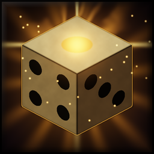

Never miss a proc · v0.1.5
ProcFlare
A big pulsing Clearcasting alert with sound and screen flash, and small icons with a countdown for weapon, trinket and talent procs. Nothing to set up.

Live demo
See it in action
A recreation in your browser, close to what you see in game.
Features
What it does
✦
Clearcasting you cannot missBig pulsing icon above your character while the buff is up, with the seconds left, a sound and a short blue flash at the screen edges. Omen of Clarity, Arcane Concentration and Elemental Focus.⚔
Weapon, trinket and talent procsSmall icons with a countdown and a softer sound. Crusader, trinkets and talent procs are picked up on their own, nothing to set up.◎
Procs on your targetDebuffs your weapon or talents put on your target, such as Icy Chill or Spell Vulnerability.✕
Mute what you do not needIn move mode your recent procs are shown: right-click one to mute or unmute it.⚙
Works in combatForever hides buff details in combat. ProcFlare still finds Clearcasting by spell, by the game's own proc glow or by your abilities becoming free.◈
LightClasses without Clearcasting do not rescan their buffs on every resource change; with Clearcasting at most five times a second.Limits. Procs that only deal damage (Fiery Weapon, Lifestealing) or grant an extra attack (Hand of Justice, Windfury) cannot be shown: Forever keeps the combat log from addons. In restricted content (some boss encounters, battlegrounds) only Clearcasting is shown.
Settings
- ◆Options > AddOns > ProcFlare, or the minimap button: left-click options, shift-click move mode, right-click preview.
- ◆Clearcasting alert, its sound and the screen flash on or off.
- ◆Other procs and their sound, only your own procs.
- ◆Longest buff that still counts as a proc (30 s by default), size and position.
Changelog
0.1.5
- Brighter icon that stays readable on the round minimap button.
0.1.4
- Icon reworked: bigger die with clear pips and less glare, easy to read even at minimap size.
0.1.3
- New icon: a die mid-roll with a glowing face, for the minimap button and the addon list.
0.1.2
- Fixed: while your target's debuffs were hidden (in combat), a proc on the target could stop the scan halfway, so procs on you were announced again and again.
- Classes without Clearcasting no longer rescan their buffs on every change of mana, rage or energy; with Clearcasting at most five times a second.
0.1.1
- Clearcasting is now also found in combat, where Forever hides buff details from addons: by spell, by the game's own proc glow, or by your abilities becoming free.
- No more "Auras cannot be accessed when secret" errors in combat.
- Spells you cast yourself (e.g. Regrowth) no longer count as procs.
1 older versions
0.1.0
- Clearcasting: big pulsing icon above your character as long as the buff is up, with remaining seconds, a sound and a short blue flash at the screen edges. Also alerts again when a new proc refreshes it.
- Other procs (weapon enchants such as Crusader, trinkets, talents): small icons with countdown and a softer sound. Found on their own, no list to maintain.
- Procs on your target: debuffs your weapon or talents put on the target (e.g. Icy Chill, Spell Vulnerability).
- Move mode: drag the icons where you want them; your recent procs are shown and a right-click mutes or unmutes one.
- Options under Options > AddOns > ProcFlare: alerts, sounds, screen flash, only own procs, longest proc duration, size, preview.
- Minimap button and addon menu entry: left-click options, shift-click move mode, right-click preview.
Goes well with
More from Bencepo


Community
Feedback, bugs and ideas
Every addon is tested in game before it ships, but Forever changes often. Tell me what breaks and what you miss.
Report a bug
Leave a comment on the addon's CurseForge page: what you did, what happened, and the error text from BugSack if there is one.
Share your run
LevelTrail turns your export into a share image for Discord or Reddit, VendorFloor does the same for your flips. Names can be hidden.
Suggest a feature
Ideas that make leveling faster or the UI calmer have the best chance. Comments on CurseForge reach me directly.